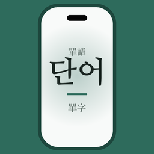

有任何問題、建議或錯誤回報,歡迎直接來信,我們會盡快回覆:
poyu0318@gmail.com桌布怎麼每天自動換?
打開 App →「鎖屏」分頁的「設定教學」→「一鍵加入捷徑」。點一下捷徑就換單字;要每天自動換,在捷徑 App「自動化」設個時間。
「設定桌布」說找不到捷徑?
iOS 只認捷徑名稱。請確認捷徑 App 裡那支捷徑的名稱,和 App 預設的名稱(LockVocabKR)一模一樣。
「即時動態」是什麼?怎麼開?
開啟後,單字卡會常駐在鎖定畫面與動態島,右上角點一下就能換下一批單字,不用打開 App。到「鎖屏」分頁點「即時動態」開啟即可(受 iOS 系統限制,單次最長常駐約 8 小時)。
單字下面那排小字是什麼?
漢字詞(例如 학교)會在韓文下方顯示對應的漢字(學校),幫你用已經認識的字記單字。固有詞與外來語沒有漢字,就不會顯示那一行。
聲音按了沒反應?
請確認手機側邊的靜音開關沒有開啟、音量已調高。發音使用系統內建的韓文語音。
完整版包含什麼?要訂閱嗎?
完整版是一次性買斷,不是訂閱、不會自動續扣。解鎖後可使用初級、中級、高級全部 5,500 多個單字,以及一次顯示 5~10 個字的多字桌布模板。免費版可使用 100 個初級單字、所有 1~4 個字的桌布模板,也能用自己的照片當背景。
我換手機/重裝後,買斷不見了?
請到 App 的「設定」分頁點「恢復購買」,用原本購買的 Apple ID 即可還原。
需要網路嗎?
不需要。單字庫內建在 App 裡,背單字與產生鎖屏桌布都可以完全離線。
本 App 不需要帳號、不追蹤你,只蒐集匿名使用統計來改善功能;學習紀錄都存在你的手機上。詳見隱私權政策。
LockVocab - Korean Words puts Korean vocabulary (5,500+ words, beginner to advanced) on your lock screen, with the Chinese characters (Hanja) shown under words of Sino-Korean origin. It works fully offline. If “Set Wallpaper” can’t find the shortcut, make sure the shortcut’s name in the Shortcuts app is exactly LockVocabKR. The full version is a one-time purchase, not a subscription; to restore it, use Settings → Restore Purchases with the same Apple ID. Questions: poyu0318@gmail.com · Privacy Policy